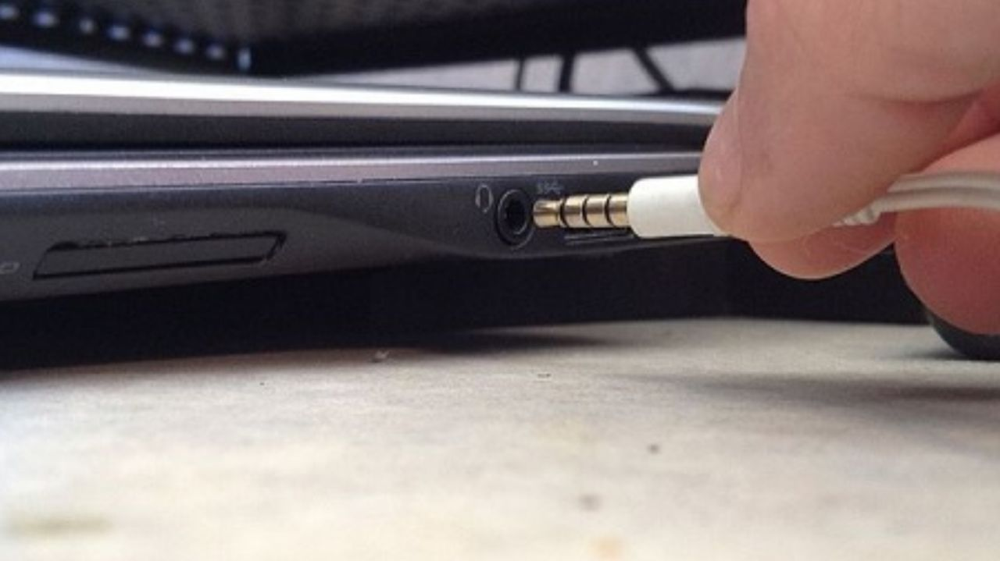

-
تکنولوژی

تولیدکنندگان لپتاپ بهدنبال حذف جک هدفون هستند
جک هدفون در لپتاپها کارایی خیلی زیادی ندارد؛ اما حذف آن میتواند تاثیرات زیادی در طراحی لپتاپ داشته باشد.
هنگامی که جک هدفون از آیفونهای اپل و سپس دیگر گوشیهای هوشمند حذف شد، بسیاری از کاربران نسبت به این موضوع واکنش منفی نشان دادند. با این حال، تعداد کاربرانی که از جک لپتاپ خود استفاده میکنند خیلی کم است. بنابراین اگر تولیدکنندگان لپتاپ دست به حذف این جک از محصول خود بزنند، میتوانند روند بهتری را در طراحی لپتاپها بهکار بگیرند؛ مانند کاری که Dell در لپتاپ جدیدش کرده است.
لپتاپها مجهز به چندین درگاه هستند و این موضوع سبب میشود تا کاربر بتواند کارهای مختلفش را با آن انجام دهد. با این حال تمام درگاههای یک لپتاپ خیلی کاربردی نیستند و برخی از آنها کمتر مورد استفاده قرار میگیرند. جک هدفون یکی از کم استفادهترین درگاهها در لپتاپ است. بهکارگیری این جک در لپتاپ باعث اشغال فضای اضافی میشود و به همین ترتیب، باعث سنگینتر و ضخیمتر شدن گجت شما میشود. حال آیا تولیدکنندگان لپتاپ نیز این موضوع را درک کردهاند؟

تولیدکنندگان لپتاپ در پی حذف جک هدفون
اگر بخواهید به موسیقی گوش دهید، مسلما گوشی گزینه اصلی شما برای این کار است و کمتر با لپتاپ سر و کار دارید. یکی از تولیدکنندگان لپتاپ که جک را از محصول جدیدش حذف کرده، کمپانی Dell بوده است. لپتاپ Dell XPS 13 Plus بدون جک هدفون پا به عرصه گذاشته و در عوض طراحی معقولتری دارد.
به لطف حذف جک هدفون از این لپتاپ، پد کیبورد آن دقیقا تا لبه دستگاه آمده و کارایی آن بیشتر شده است. در کنار این ویژگی، وزن و ضخامت Dell XPS 13 Plus بسیار کم است و حذف جک هدفون در این امر تاثیر زیادی میگذارد. این کار به تولیدکنندگان امکان مرتبسازی چینش درگاهها و افزایش تعداد آنها را میدهد. از سوی دیگر با افزایش فضای داخلی لپتاپ، میتوانیم شاهد عرضه محصولاتی با باتری بزرگتر و سیستم خنکسازی پیشرفتهتری باشیم.
مشخصا حذف جک هدفون از لپتاپ، توجیهپذیری بسیار بیشتری در مقایسه با حذف آن از آیفون و برخی گوشیهای هوشمند دارد. حتی اگر از جک لپتاپ خود زیاد استفاده کرده باشید، با وجود جک هدفون همچنان میتوانید از تبدیلهای مخصوصی استفاده کنید که در جعبه برخی گوشیهای هوشمند نیز پیدا میشوند. این تبدیلها با اتصال به درگاه USB-C، آن را به جک 3.5 میلیمتری مبدل میسازند.
در نتیجه میتوان گفت که حذف جک هدفون از لپتاپ نه تنها بد نیست، بلکه میتواند به نوآوری در طراحی و افزایش فضای داخلی لپتاپ کمک کند. بنابراین بهتر است تولیدکنندگان بیشتری چنین موضوع مهمی را مد نظر بگیرند و مانند Dell، زودتر آن را عملی کنند.